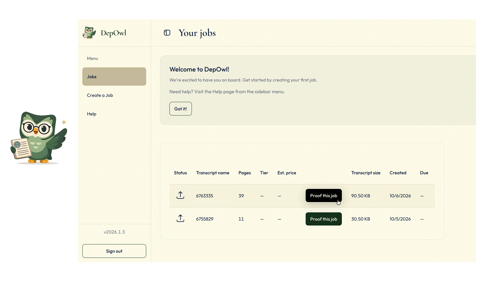
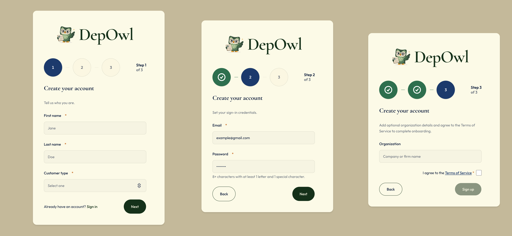
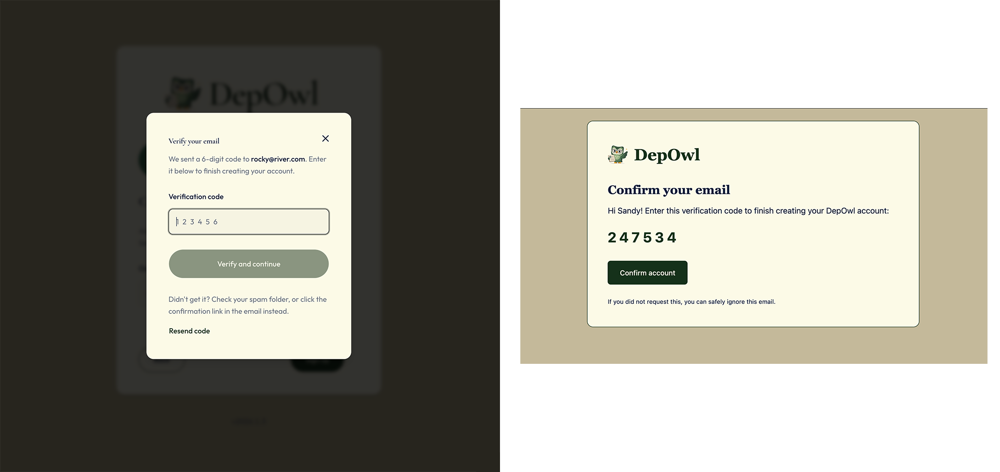
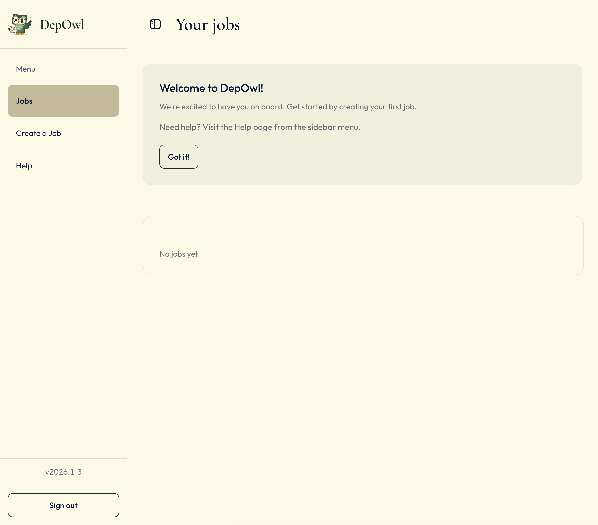
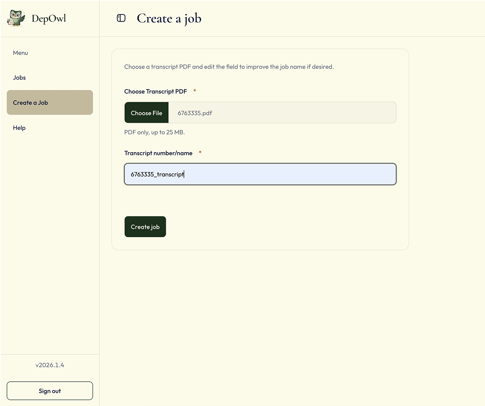
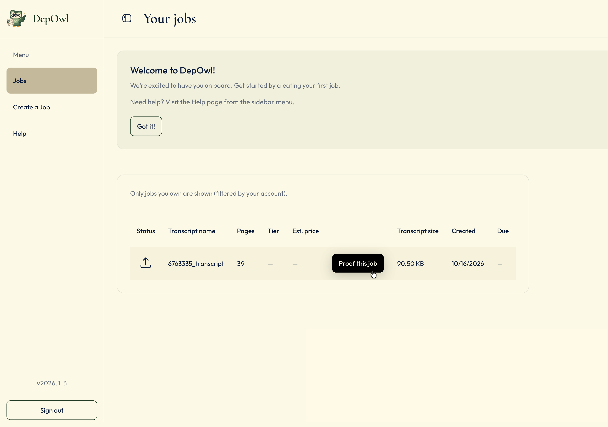
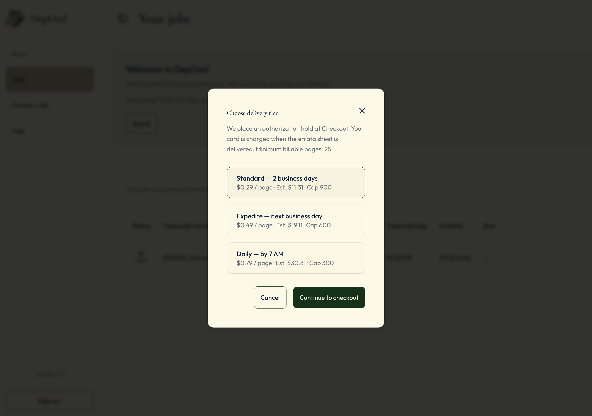
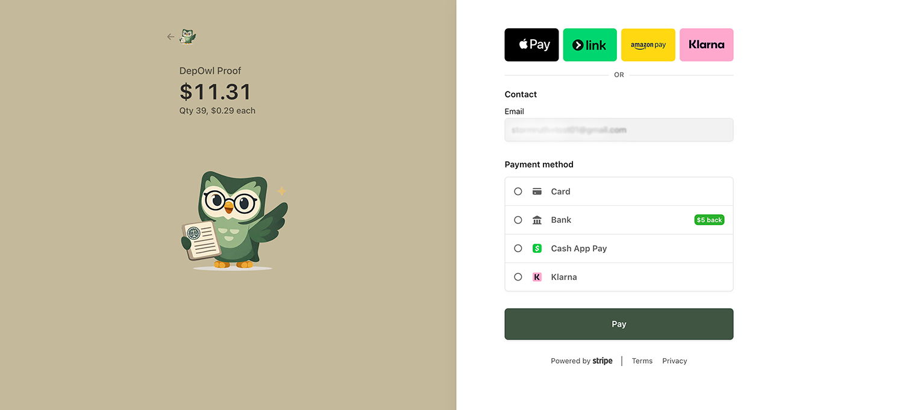

DepOwl

I independently designed and built the DepOwl MVP in seven months, owning the architecture, implementation, and secure production delivery. I leveraged AI-augmented development workflows using Cursor and GitHub Copilot, including agent-directed implementation, context engineering, AI-assisted code review and refinement, test generation, debugging, and architectural validation. The resulting application supports the complete court reporter workflow, from account creation and transcript upload through tiered payments and status tracking to delivery of a downloadable errata sheet.
| Product | DepOwl Legal (web app) |
|---|---|
| My role | Staff Software Engineer and independent product developer |
| Timeline | Seven months to an MVP |
| Team | Two-person product; I wrote most of the code |
| Primary users | Court reporters and their staff |
Court reporters and errata
Court reporters produce deposition transcripts. Before a transcript goes to the attorneys, it needs an errata sheet listing the corrections. The record should reflect the reporter’s work and build trust. DepOwl notifies the reporter and makes the errata sheet available as soon as it is ready.
Problem and constraints
- Security. The data is legal material, so the security bar is high.
- Team size. One coder built the product.
- Trust in email. Email is the reporter's first signal that the work is done right, so it has to earn their trust.
Working with AI
I used AI tools throughout the build, and I kept the decisions. I set the architecture, directed the AI on each change, and reviewed what it produced before it shipped.
- Architecture first. I decided the system design, data model, and security boundaries before asking AI to build within them.
- Directed changes. I scoped each change, reviewed the diff, and checked the result against the flow the reporter sees.
- Targeted use. I used GitHub Copilot for code review and refinement, catching issues in flows like sign-up and password recovery, and leaned on agent-directed prototyping and debugging to work through tricky logic before I committed to it.
Product context
A deposition transcript is a structured legal record, not ordinary prose. DepOwl reviews the document across specialized verification layers, including language, transcript structure, legal context, and consistency across the record. Findings are grounded in the transcript and organized with page and line references, original wording, and a proposed correction or review flag. The reporter remains in control of the final decision.
The web experience connects that verification work to the reporter’s everyday workflow: submit a transcript, choose the required turnaround, follow progress, and receive the errata report.
Sign up
Sign-up has three steps. The first collects first and last name, customer type (court reporter, scopist or proofreader, law firm staff, agency, stenography school, or other), and an optional CSR number. The second collects email and a password of at least eight characters, including a letter and a special character. The third adds an optional organization and the Terms of Service. A verification prompt follows sign-up.

Decision: minimal sign-up fields. I kept the form to what an account needs, so a new user can start quickly. The organization is optional.
Verify
After completing the sign-up steps, the user is prompted to verify their email address. This ensures that the account is associated with a valid email before proceeding to use the application.

Decision: verification prompt. After sign-up, the user sees a verification prompt to confirm their email address before proceeding.
The flow
The reporter’s path has five steps.
1. Welcome messaging, Jobs list and first run
After entering the verification code sent to their email, a new account opens to its Jobs list. A welcome banner says “Welcome to DepOwl!” and points to Help.

2. Create a job
The user clicks Create a job to open the form. The job name is then automatically generated based on uploaded transcript file name and displayed in the form. They then choose a transcript name and upload a PDF of up to 25 MB. The PDF is validated for size and format before being accepted.

After uploading the PDF, the server counts the pages while the Pages cell reads “Counting…”. If the count fails, the cell shows Error with a Retry count button.

3. Choose a tier and pay
Once the page count is known, Proof this job opens the “Choose delivery tier” dialog. Each tier shows its price per page, an estimate for this transcript, and its page cap. A tier the transcript exceeds is marked “Over cap” and disabled. Continuing opens Stripe Checkout. If checkout is unfinished, the job offers Resume payment.

| Tier | Turnaround | Price per page | Page cap |
|---|---|---|---|
| Standard | 2 business days | $0.29 | 900 |
| Expedite | Next business day | $0.49 | 600 |
| Daily | By 7 AM | $0.79 | 300 |
Stripe places an authorization hold for the greater of the page count or 25 pages. The card is charged when the errata sheet is delivered. The dialog states this, and the 25-page minimum, before checkout. When the reporter returns from Stripe, a “Authorization started” confirmation repeats the timing: the hold shows as Authorized once Stripe confirms, and the card is charged when the errata is delivered.

Decision: authorization hold instead of an upfront charge. The price depends on the page count, so I hold the billable amount and capture it on delivery. I rejected charging up front.
4. Status, then download
Each status shows an icon with a text label (Uploaded, Processing, or Ready for Download), so the state is legible without relying on color. The status moves from Uploaded to Processing to Ready for Download. Admin uploads the errata PDF, which captures the held payment and marks the job ready. The reporter then gets an email with the errata sheet attached and can download it from the job with the Download Errata action.
Decision: React Email for email templates. The templates were HTML strings inside Edge Functions. I moved them to React Email, so they can be composed and previewed. A build step turns them into the Edge Function templates, including the errata-ready email. I rejected keeping the HTML strings.
5. Errata delivery
The errata sheet is delivered to the reporter via email and is also available for download from the job page. This step finalizes the job, capturing the held payment and marking the job as complete.
One job, a complete status picture
Each row brings the transcript and its service details together, so the reporter can scan progress and find the next available action.
| Column | What the reporter reads |
|---|---|
| Status | Uploaded, Processing, or Ready for Download |
| Transcript name | The name entered on Create a Job |
| Pages | Counting…, a number, or Error with Retry count |
| Tier | Standard, expedite, or daily once chosen; otherwise — |
| Est. price | Based on page count and tier. “Over cap” if the transcript exceeds the tier’s cap. — until both exist. |
| Payment | Proof this job, Resume payment, Counting…, or a payment state (Authorized, Paid, Pending, Failed, Refunded, Unpaid) |
| Transcript size | Size of the uploaded PDF |
| Created, Due, Ready Est., Ready | Dates. Empty cells stay — until a date is set. |
| Download Errata | The download action when the job is ready and a file is present; otherwise — |